| Take | Hero at 1024, then renders at 128 / 64 / 48 / 32 / 16 css px (2× retina sources), plus the 16px squint magnified | Rubric | Verdict |
|---|---|---|---|
| A · icon.svghand-authored layered SVG — SHIPS | 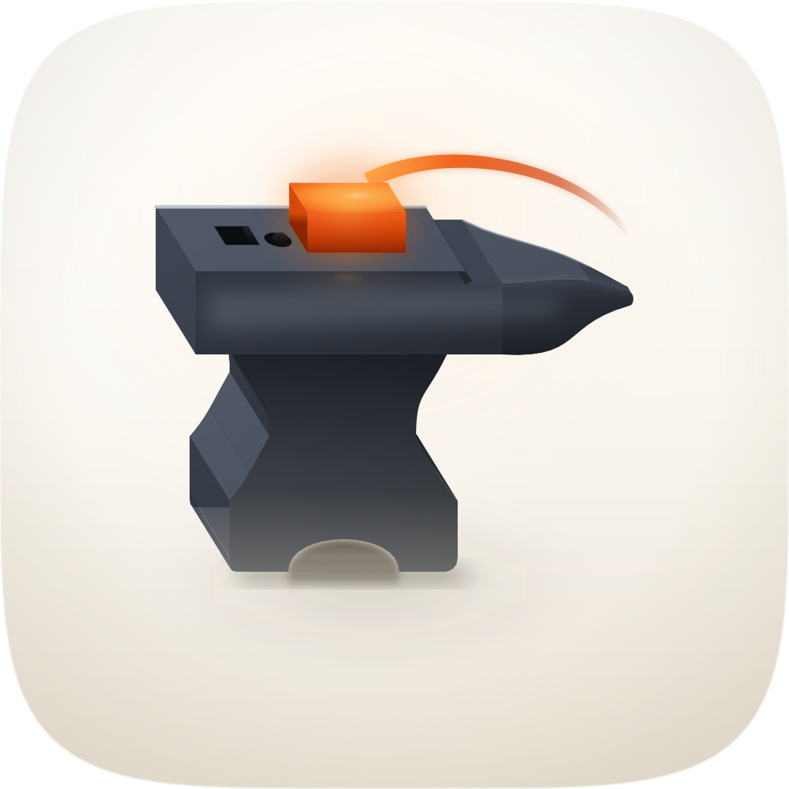  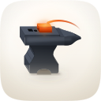 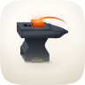 |
11 / 12 | Passes 1–4 on the renders, not on intent: filled solid black the shape is unmistakably an anvil (heel, face, horn, waist, arched foot), and 16px RMS luminance contrast measures 0.258 against a family median of 0.152. The anvil is a solid rather than a silhouette — the profile extruded along one oblique axis, the horn tapering to a cone — and every visible face takes its value from one Lambert term against one key, giving top plane 7.41:1 and near flank 12.79:1 against the porcelain. Docked one point on #8: the step's far strip is occluded by paint order rather than by computed geometry, so the boundary where it meets the horn's top band is a straight cut where two surfaces at different heights should overlap. Salvaged from B and C, which agreed independently: the horn is a separately-valued rounded cone, not a flat wedge sharing the slab's gradient. |
| C · icon-engineC-porcelain-c23701.pngGPT Image 2 raster, corpus-referenced — material target | 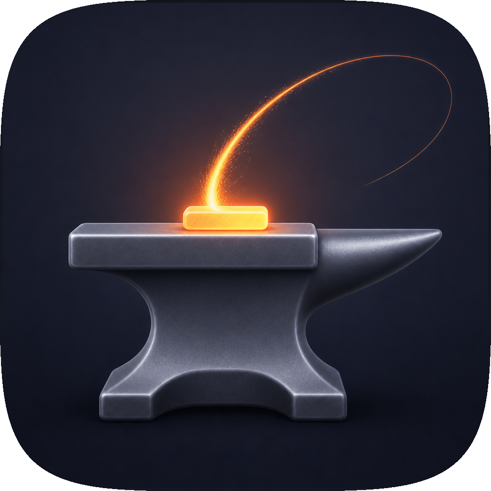 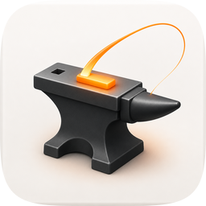 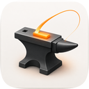 |
8 / 12 | Best material in the set and it still loses, on two hard checks. #1 fails: it baked its own rounded-corner mask and a white inset border, so it ships as a tile inside a tile — the renders here are its squircle-masked version, which is the only way it can be audited beside its siblings. #10 fails by construction as a flat pre-masked raster. #11 is weak: the trajectory came back as a bent plastic wire that dies to a hairline, so the one move the icon exists to make — out and back — is the thing it lost. What it won: real ambient occlusion, rounded fillets, a genuine contact shadow, and the horn as a rounded cone. That last one went into the master. |
| Cdark · icon-engineC-forge-9f7b8f.pngGPT Image 2 raster, dark register — the previous commission's material target | 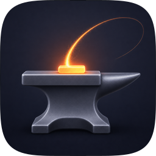 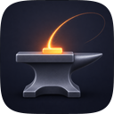 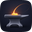 |
8 / 12 | The handsomest artifact on the sheet and disqualified before it is scored: the dark deep-sea register belongs to trawl alone in this marketplace, and this is the take the replaced master was built to match, which is how that master ended up dark. #1 fails (a plain square field, no tile designed for the mask) and #10 fails as a flat raster. Its spark is genuinely better than the master's in one respect — a thin bright core inside a glow, thickening as it lands. On porcelain that construction measures under 3:1 and dissolves, which is why the shipping arc is a deeper ember ribbon instead: the same idea, re-valued for a light ground. |
| Adark · icon-engineA-darkfield-2c2f3e.svghand-authored layered SVG, dark register — the take being replaced | 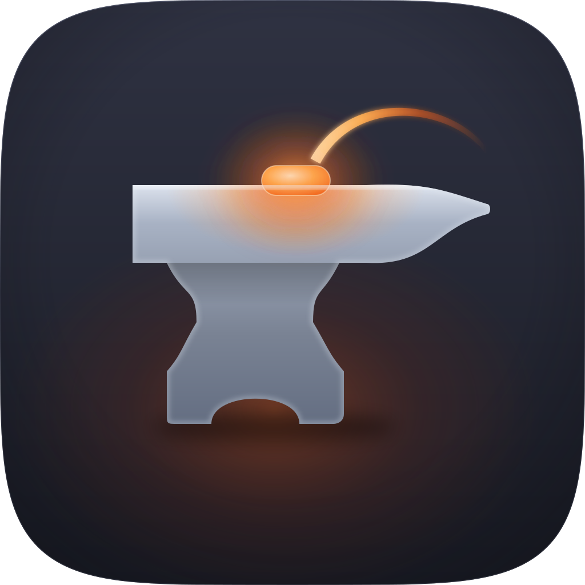 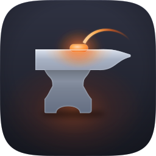 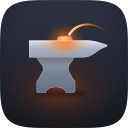   |
10 / 12 | Clears the delivery bar and is still the wrong icon, which is worth recording because a rubric score is not a shelf test. It loses on a house rule the rubric does not carry — the dark register is reserved — and at 16px it read as trawl's sibling. Docked #8 and #5 for the same cause: form is carried by a radial vignette centred on the object rather than by authored planes lit from the stated key, which is why it measured the flattest icon in the set at 77.3% of interior pixels locally uniform. Its geometry was never the defect and is carried over intact: face proportions, horn tip in the upper third, waist at half the face, and the arched foot that two independent engines drew before the master had it. |
| B · icon-engineB-arrow-593458.svgArrow 1.1 vector, porcelain spec |  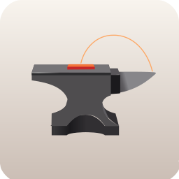 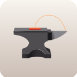 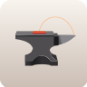 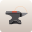 |
5 / 12 | Hard fails #1 and #4. It bakes a plain rounded-rect mask rather than the set's superellipse, and at 32px the facets mush into one grey mass while the trajectory closes into a handle over the tool — the kettle-handle failure the previous commission already diagnosed, reproduced independently, which is useful evidence that an arc touching the horn will always read as a grip. Also fails #5 (the horn is lit as a pale cone from the opposite side to the body), #8 (flat facets, no occlusion, no contact shadow) and #9. Salvaged: the horn drawn as a form with its own value, which agrees with C and is the one change the master took from either. |
| Bdark · icon-engineB-arrow-48ee4c.svgArrow vector, dark register | 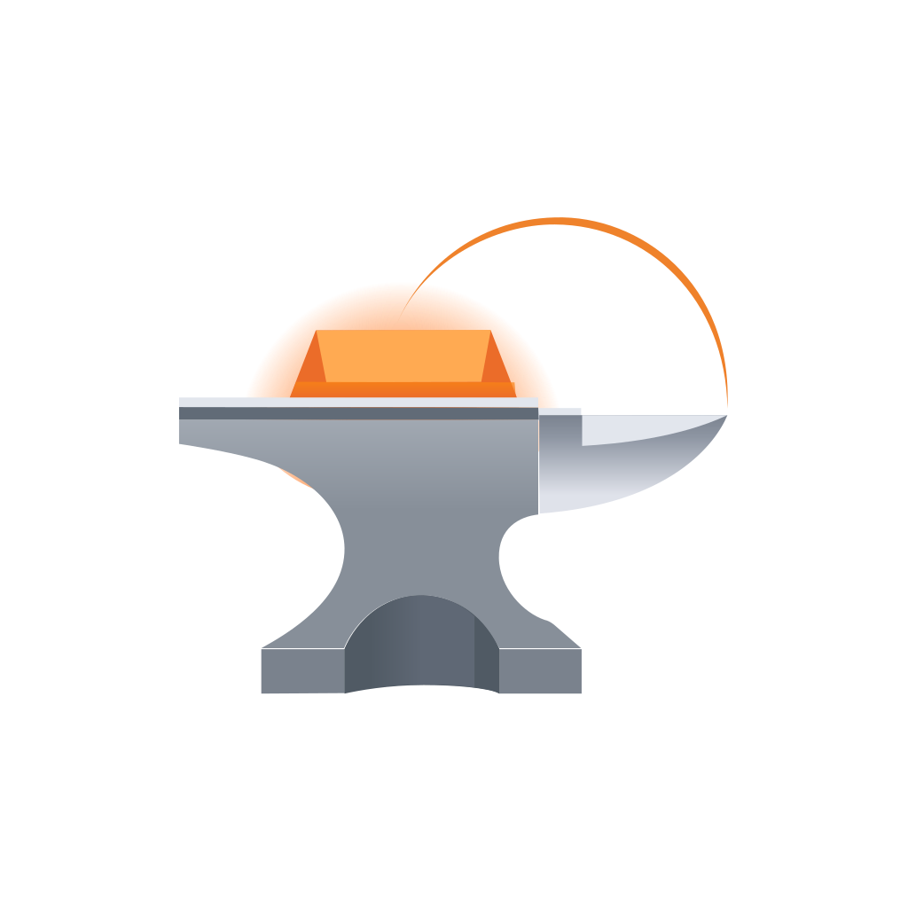 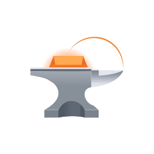    |
4 / 12 | The weakest take across both runs. No tile at all — a flat black square, so #1 fails outright — and the work reads as an orange dome capping the anvil with a wire hoop behind it, so at 32px the whole thing is a lamp rather than a tool. Fails #4, #5, #8, #9 and #11. Kept on the sheet because it is the second time Arrow has closed this trajectory into a handle, on two independently written briefs. |